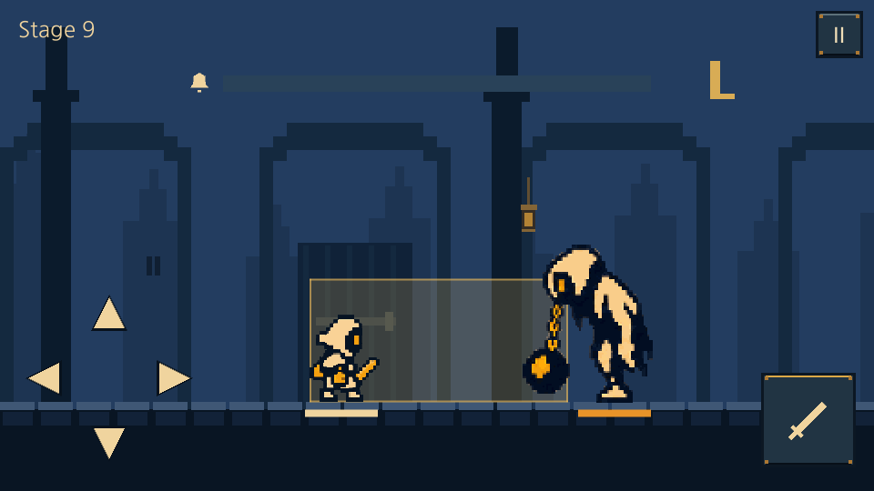
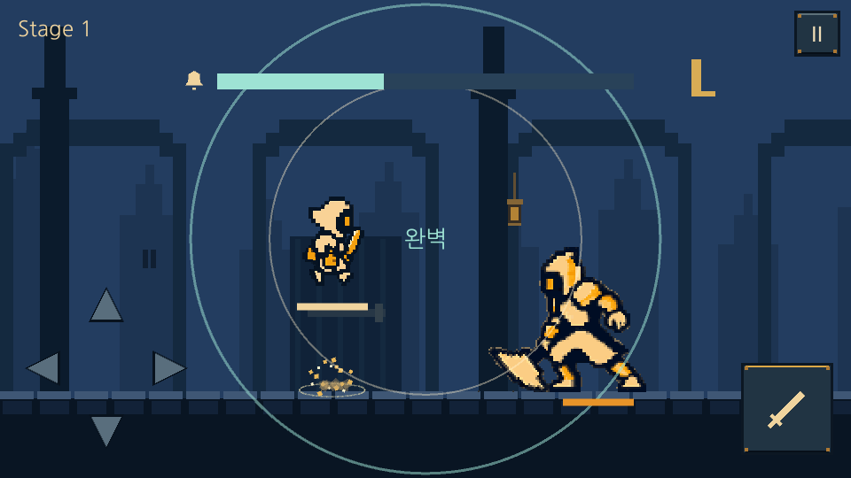
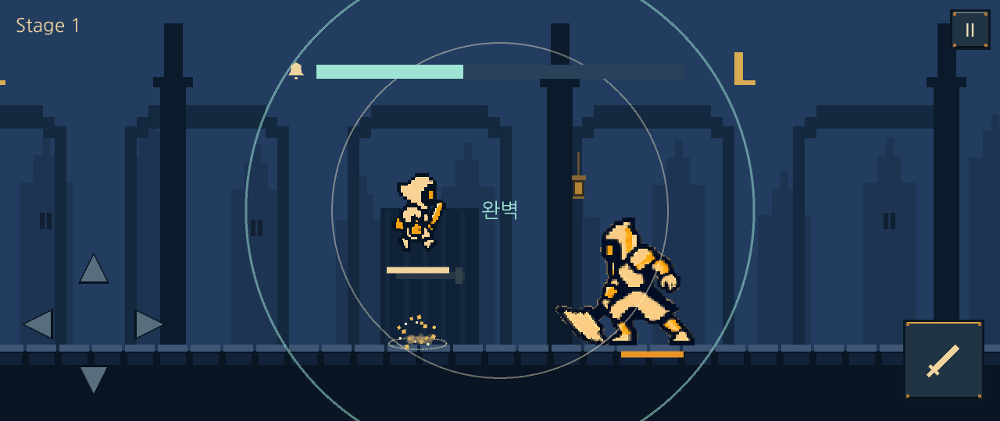
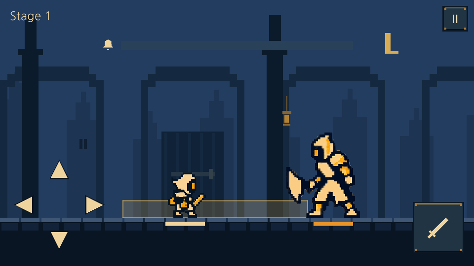
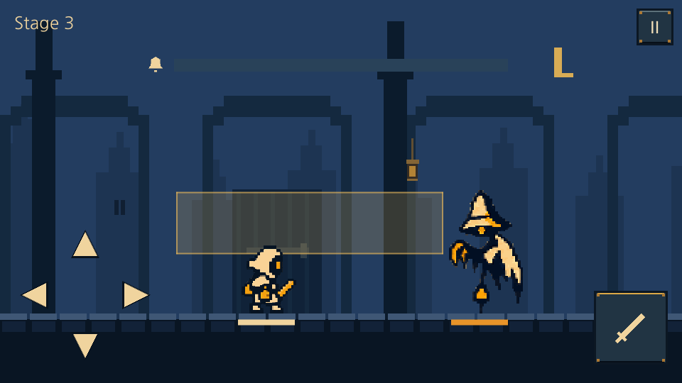
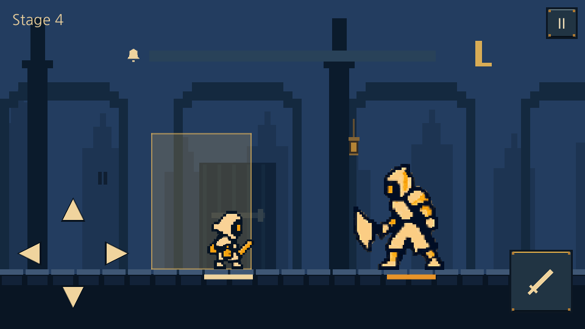
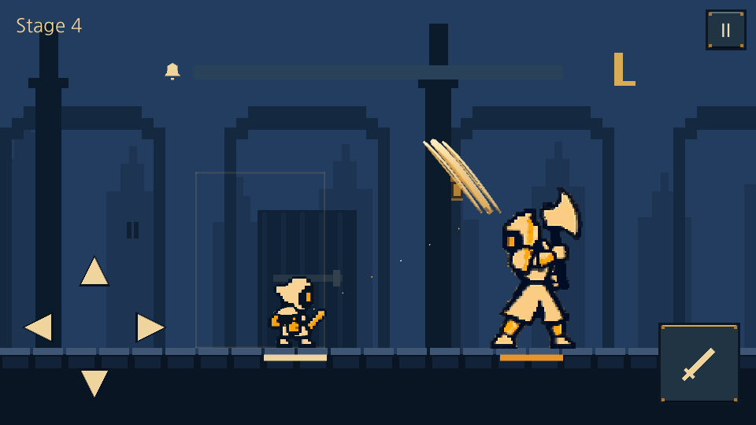
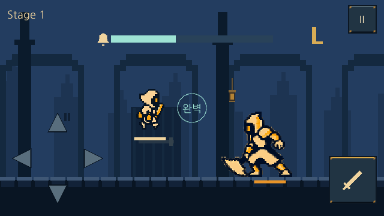

LAST BELL · WINDOWS BUILD · COMBAT v5.5
금빛 예고, 완벽 회피, 즉시 반격
아래는 실제 Windows 실행본에서 20ms 간격으로 캡처한 장면입니다. 앞 영역 3회 → 뒤 영역 3회 → 두 번의 공격 → 완벽 회피 후 공격 입력을 재생합니다. 이 기록은 무음입니다.
Windows 실행 파일 · Windows ZIP · 검증 기록 · v5.5 기획 보드

0 ms
화면 중앙에서 바깥까지

캐릭터와 분리된 화면 중심 · 청록/크림 원형 고리 두 겹
넓은 화면에서도 뷰포트 정중앙 유지네 방향의 위험 영역
창 찌르기 · 몬스터 앞에서 캐릭터까지
낮은 휩쓸기 · 발밑 위험
높은 휩쓸기 · 머리 높이 위험
후방 내려치기 · 뒤쪽 위험
몬스터 공격과 연출 줄이기

방향별 무기 궤적 · 접촉 파편과 지면 파문
연출 줄이기 · 정적 문양, 파편과 흔들림 제거